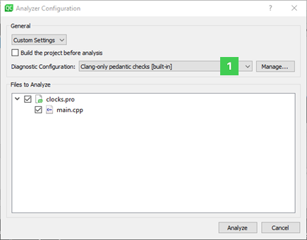
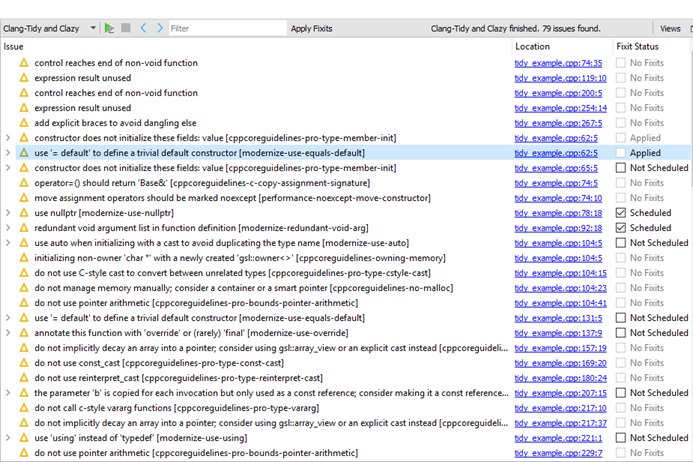
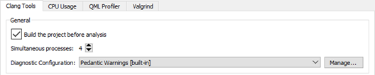
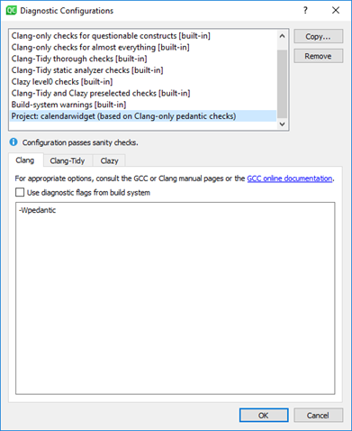
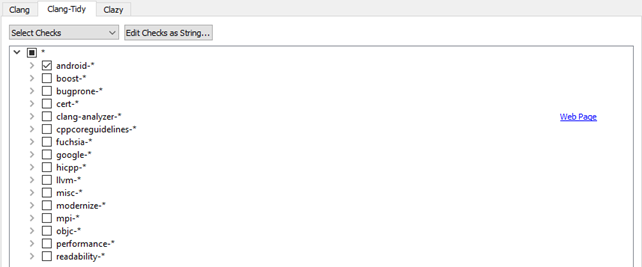
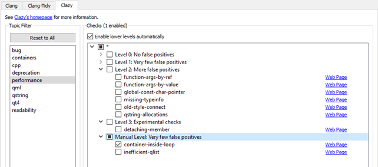

Using Clang Tools
Qt Creator integrates the following Clang tools for finding problems in C, C++, and Objective-C source code by using static analysis:
- Clang-Tidy, which provides diagnostics and fixes for typical programming errors, such as style violations or interface misuse.
- Clazy, which helps Clang understand Qt semantics. It displays Qt related compiler warnings, ranging from unnecessary memory allocation to misuse of API and provides refactoring actions for fixing some of the issues.
Note: The Clang static analyzer checks are a part of Clang-Tidy. To use the checks you must create a custom configuration for the Clang tools and enable them for Clang-Tidy.
Clang tools are delivered and installed with Qt Creator, and therefore you do not need to set them up separately.
Running Clang Tools
To run the Clang tools to analyze an open project:
- Select Analyze > Clang-Tidy and Clazy.

- In the General group, select Custom Settings to modify the analyzer configuration.
- To build the project before running the Clang tools, select the Build the project before analysis check box. The Clang tools do not require the project to be built before analysis, but they might display misleading warnings about files missing that are generated during the build. For big projects, not building the project might save some time.
- In the Diagnostic configuration field, select a Clang configuration in the list of pre-defined configurations (1). For more information about creating a custom configuration, see Configuring Clang Tools.
- In the Files to Analyze group, select the files to apply the checks to.
- Select Analyze to start the checks.
If you select Debug in the mode selector to open the Debug mode and then select Clang-Tidy and Clazy, you must select the  (Start) button to open the Analyzer Configuration dialog.
(Start) button to open the Analyzer Configuration dialog.
The found issues are displayed in the Clang-Tidy and Clazy view:

Select the link in the Location column to move to the location where the issue appears in the code editor.
In the Fixit Status column, select issues that you want to apply refactoring actions to, and then select Apply Fixits. The status of the issues is updated in the Fixit Status column.
Configuring Clang Tools
To configure Clang diagnostics globally for Clang tools:
- Select Tools > Options > Analyzer > Clang Tools.

- To build the project before running the Clang tools, select the Build the project before analysis check box. The Clang tools do not require the project to be built before analysis, but they might display misleading warnings about files missing that are generated during the build. For big projects, not building the project might save some time.
- In the Simultaneous processes field, select the number of processes to run simultaneously to make the analysis faster on multi-core processors.
- In the Diagnostic Configuration group, select Manage to create or edit a custom configuration.
- Select Copy to create a custom Clang configuration.

- In the Diagnostic configuration name field, give the configuration a name, and then select OK.
- In the Clang tab, select the Use diagnostic flags from the build system check box to forward diagnostic flags, such as warning flags, from the build system to the Clang code model for displaying annotations in the code editor.
- In the Clang-Tidy tab, select Select Checks to select the checks to perform, Use .clang-tidy Config File to read them from a Clang-Tidy configuration file, or Disable to disable them.

- Select the Web Page link to view more information about the available checkers in the Clang Static Analyzer documentation.
- To edit the selected check as plain text, select Edit Checks as String.
- In the Clazy tab, select the level of Clazy checks to perform.

- In the Topic Filter field, select a topic to view only checks related to that area in the Checks field.
- To view all checks again, select Reset to All.
- To view more information about the checks online, select the Web Page links next to them.
To suppress diagnostics, select Suppress This Diagnostic in the context menu. To view the suppression list for a project and to remove diagnostics from it, select Projects > Project Settings > Clang Tools.
Selecting Clazy Check Levels
The Clazy checks are divided into levels from 0 to 3. The checks at level 0 are very stable and provide hardly any false positives, while the checks at level 3 can be considered experimental. You can select the checks to perform at each level. To include the checks from the lower levels automatically, select the Enable lower levels automatically check box.